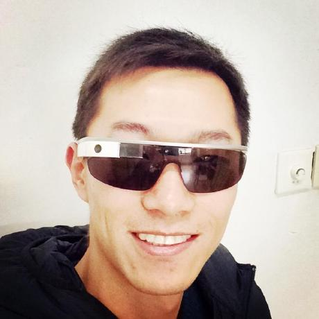

Few-Shot & Meta-Learning
少样本与元学习
Relation Networks and meta-critic methods for learning from limited supervision and improving transfer.
关系网络与元评论器方法，面向少监督学习与跨任务迁移。
Founder & CEO of XVI Robotics, focused on general-purpose humanoid robot brain systems. Research spans reinforcement learning, meta-learning, few-shot learning, agentic intelligence, and multimodal foundation models.
XVI Robotics 创始人兼 CEO，专注于通用人形机器人的大小脑系统。研究方向覆盖强化学习、元学习、 少样本学习、智能体智能与多模态基础模型。

Data refreshed September 8, 2026 from 数据于 2026-09-08 更新，来源： Scholar, GitHub API, OpenAlex
Flood Sung is an AI researcher and engineer working across deep learning, reinforcement learning, meta-learning, few-shot learning, and agentic systems. He currently leads XVI Robotics, building brain systems for general-purpose humanoid robots.
His Google Scholar profile lists 11,140 citations, with research interests in robotics, foundation models, agents, reinforcement learning, and meta learning. His CVPR 2018 paper Learning to Compare: Relation Network for Few-Shot Learning is a CVPR 2018 paper on few-shot visual recognition.
At Moonshot AI, his recent coauthored work connects long-chain reasoning, reinforcement learning, multimodal models, formal reasoning, and open agentic intelligence through the Kimi series.
Flood Sung 是一位横跨深度学习、强化学习、元学习、少样本学习与智能体系统的 AI 研究员与工程师。 他目前领导 XVI Robotics，打造面向通用人形机器人的大小脑系统。
他的 Google Scholar 主页显示总引用 11,140 次，研究兴趣包括机器人、基础模型、智能体、 强化学习与元学习。CVPR 2018 论文 Learning to Compare: Relation Network for Few-Shot Learning 是一篇关于少样本视觉识别的 CVPR 2018 论文。
在月之暗面的近期合作研究中，他参与了 Kimi 系列模型相关工作，把长链推理、强化学习、多模态模型、 形式化推理与开放智能体智能连接起来。
The through-line is sample-efficient intelligence: models that reason, adapt, act, and transfer across real environments.
主线是样本高效智能：能够推理、适应、行动，并迁移到真实环境中的模型。
Relation Networks and meta-critic methods for learning from limited supervision and improving transfer.
关系网络与元评论器方法，面向少监督学习与跨任务迁移。
RL for reasoning, planning, formal proof, code generation, and long-horizon agent behavior.
面向推理、规划、形式化证明、代码生成与长程智能体行为的强化学习。
Open agentic intelligence, computer-use agents, multimodal models, and tool-using systems.
开放智能体智能、计算机使用智能体、多模态模型与工具使用系统。
Citation counts: Google Scholar, September 8, 2026. 引用数：Google Scholar，2026-09-08。
GitHub API snapshot: 121 public repos, 46,094 stars, 8,916 forks. GitHub API 快照：121 个公开仓库，46,094 stars，8,916 forks。
stars across public GitHub repositories, led by long-running reading roadmaps and reproducible research code.
公开 GitHub 仓库累计 stars，以长期维护的论文路线图与可复现研究代码为主。
A curated reading roadmap for deep learning papers, widely used by students and researchers.
面向深度学习论文的系统阅读路线图，被学生与研究者广泛使用。
Paper collection for meta-learning, learning to learn, one-shot learning, and few-shot learning.
元学习、learning to learn、one-shot 与 few-shot learning 论文合集。
PyTorch implementation of the CVPR 2018 Relation Network paper.
CVPR 2018 关系网络论文的 PyTorch 官方实现。
Playing Flappy Bird with deep Q-learning, built as a practical RL learning project.
使用 Deep Q-Learning 玩 Flappy Bird 的强化学习实践项目。
Reimplementation of DDPG for continuous control with OpenAI Gym and TensorFlow.
基于 OpenAI Gym 与 TensorFlow 的 DDPG 连续控制复现。
A focused collection of papers on the intersection of LLMs and reinforcement learning.
聚焦 LLM 与强化学习交叉方向的论文合集。
A concise public-facing timeline of roles and research programs.
公开主页中的简明经历线索。
Building general-purpose humanoid robot brain systems that integrate perception, reasoning, planning, and control.
打造通用人形机器人大小脑系统，连接感知、推理、规划与控制。
Worked on Kimi series research, including long-chain reasoning, RL scaling, multimodal models, and agentic systems.
参与 Kimi 系列研究，包括长链推理、RL scaling、多模态模型与智能体系统。
Led AGI-oriented research projects and advanced machine-learning applications.
领导面向 AGI 的研究项目与机器学习应用探索。
Conducted research and development in deep learning and reinforcement learning.
从事深度学习与强化学习方向的研究和开发。
Built the research and open-source body of work that led to few-shot learning, RL, and meta-learning contributions.
通过独立研究与开源积累，形成少样本学习、强化学习与元学习方向的长期贡献。
For research collaboration, speaking, media, or company-building conversations.
适用于研究合作、演讲、媒体与创业交流。